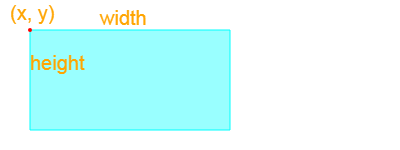
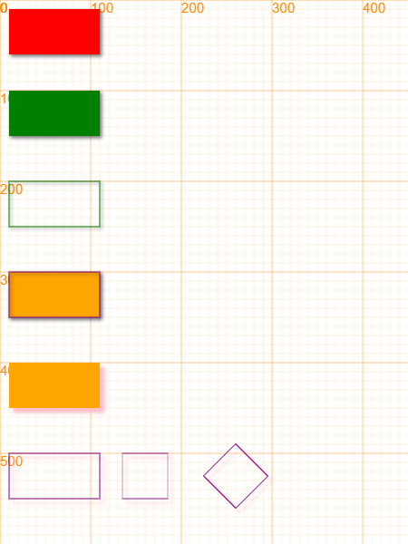
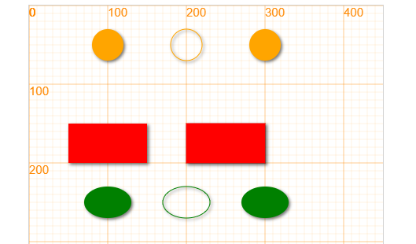

长方形 rectangle¶
绘图函数 rectangle¶
长方形是由顶点位置和宽和高组成，并且我们可以画出不同颜色的长方形。长方形的定义如下：
rectangle(x, y, w, h, *color)
/***************************
x - x坐标
y - y坐标
w - 宽度
h - 高度
color - 颜色，默认为orange
***************************/
通过设定rectangle的属性，我们可以绘制不同的一些长方形。
canvas.showAxis();
rectangle(50, 50, 100, 50);
rectangle(50, 150, 100, 50, 'red');
rectangle(50, 250, 100, 50, '#ffff00');
// 如果想要画一个边框的长方形边框，在使用rectangle之前，使用fill方法
fill(false); // 无填充
rectangle(200, 50, 100, 50);
rectangle(200, 150, 100, 50, 'red');
rectangle(200, 250, 100, 50, '#ffff00');
运行后就可以得到下述结果，在这里canvas.showAxis();让我们能够在画布上显示出坐标。

矩形对象 Rectangle¶
class Rectangle(x, y, width, height, color)
/***************************************************************
长方形类
x, y: 左上角顶点的位置
width: 长方形的宽度
height: 长方形的高度
color: 长方形的颜色，默认为"orange"
***************************************************************/
方法¶
绘制 draw¶
设置碰撞比例 setCollisionScale(w, h)¶
设置碰撞区域大小，默认为1，即正常大小
当w设置为0.5时，表示可碰撞区域的宽度为原始宽度的一半
canvas.showAxis();
// 一行代码画出一个
rectangle(10, 10, 100, 50, "red");
// 使用new方式创建，等同于以下方法，使用new方式可以产生一个可以控制的对象
var rect = new Rectangle(10, 100, 100, 50, "green");
rect.draw();
// 通过stroke来仅仅绘制边框，颜色为创建时使用的的颜色
rect.y += 100;
rect.stroke();
// 通过stokeStyle和fillStyle来改变长方形的样式，默认draw = fill
rect.y += 100;
rect.fillStyle = "orange";
rect.strokeStyle = "purple";
rect.draw();
rect.stroke();
// 同样，所有图形都可以设置阴影
rect.y += 100;
rect.shadowColor = 'pink';
rect.shadowBlur = 4;
rect.shadowOffsetX = 5;
rect.shadowOffsetY = 5;
rect.fill();
// 通过transform方法，可以对长方形进行形变
rect.y += 100;
rect.stroke();
rect.x += 100;
rect.scale(0.5, 1);
rect.stroke();
rect.x += 100;
rect.rotate(45);
rect.stroke();
运行效果，从上到下，我们可以看到不同长方形在画布上的的效果

样式填充 fill¶
fill(bool):设置是否填充图形，默认为填充，设置后对所有之后的图形生效。
/******************************************
fill(bool)
设置图形是否填充，对后续所有图形生效
* fill(true): 填充图形
* fill(false): 不填充图形
/******************************************/
举例：
canvas.showAxis();
circle(100, 50, 20);
rectangle(50, 150, 100, 50, 'red');
ellipse(100, 250, 30, 20, 'green');
fill(false); // 无填充
circle(200, 50, 20);
rectangle(200, 150, 100, 50, 'red');
ellipse(200, 250, 30, 20, 'green');
fill(true);
circle(300, 50, 20);
rectangle(200, 150, 100, 50, 'red');
ellipse(300, 250, 30, 20, 'green');
运行效果：

我们首先用canvas.showAxis()显示画布坐标，然后用3个不同的绘图函数画出了3个实心的图形。